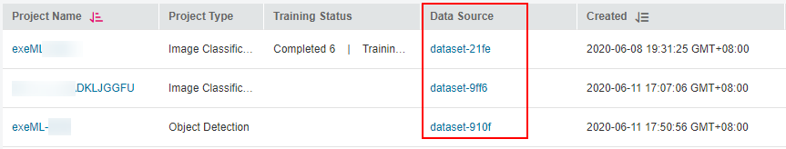

To add data for an existing project, perform the following operations. The operations described in this section apply only to object detection and image classification projects. For a predictive analytics project, you can directly add data to its data files.
Obtaining the Data Source of an ExeML Project
- Log in to the ModelArts management console and choose ExeML from the left navigation pane.
- In the ExeML project list, you can view the data source corresponding to the project in the Data Source column. Click your desired data source link to go to the dataset selected or created during project creation.

For a predictive analytics project, the data source is an OBS path, not a dataset. For other types of ExeML projects, the data source is a dataset.
Figure 1 Viewing the data storage path

Uploading New Data to OBS
Log in to OBS Console, access the data storage path, and upload new data to OBS.
For details about how to upload files to OBS, see Uploading a File.
Synchronizing Data to ModelArts
- After data is uploaded to OBS, go to the ExeML page on the ModelArts management console.
- In the ExeML project list, select the project to which data is to be added and click the project name. The Label Data page is displayed.
- On the Label Data page, click Synchronize Data Source.
It takes several minutes to complete data synchronization. After the synchronization is complete, the new data is synchronized to the Unlabeled or Labeled tab page.